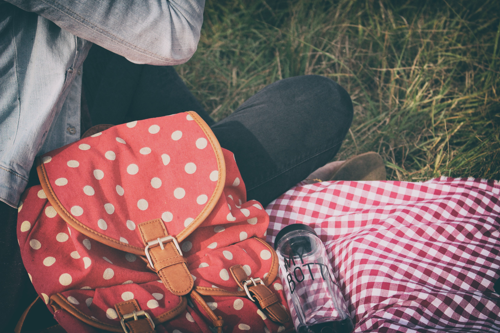

Stop Polluting the Planet with Disposable Plastic Water Bottles
Plastic waste (including plastic bottles) washes into the ocean and kills 1.1 million marine creatures annually
water bottles contain chemicals like BPA and antimony that can cause reproductive issues, asthma and dizziness
Water packaged in disposable bottles is shockingly expensive when compared to other sources of drinkable water
Choosing a Sustainable Water Bottle
there is simply no good reason not to switch to eco-friendly reusable bottles
Plastic Water Bottle
Reusable plastic water bottles are one of the least expensive and easily found choices
Stainless Steel Water Bottle

Generally the best choice for a clean, durable water bottle is stainless steel
Glass Water Bottle

Glass water bottles are beautiful, and they have no health risks associated with them
When you ditch disposable bottled water, you save money, live healthier, and join a movement for global sustainability